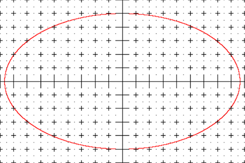
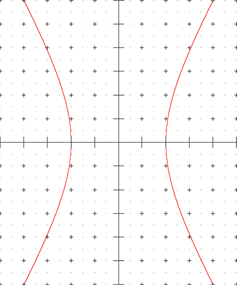
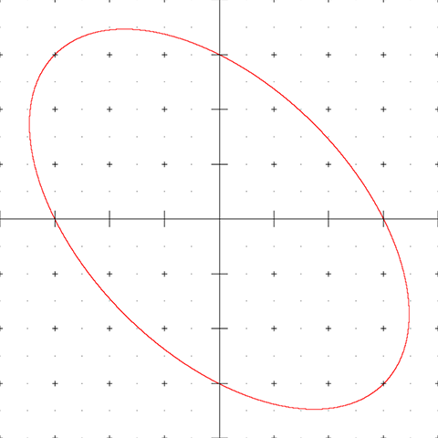
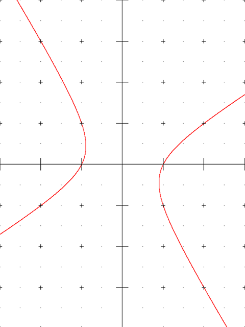

圆锥曲线及二级结论
第一定义及标准方程
椭圆

平面内与两个定点 \(F_1,F_2\) 距离之和等于常数 \(2a\left(2a\gt\left\vert F_1 F_2 \right\vert\right)\) 的点的轨迹称为椭圆．
即，椭圆上一点 \(P\) 满足
其中 \(F_1,F_2\) 为椭圆的焦点，\(2c=\left\vert F_1 F_2\right\vert\) 为椭圆的焦距．并且可以证明，\(2a\) 为椭圆的长轴．
为什么要有系数 2？
这是为了简化标准方程的形式．
以过椭圆两焦点 \(F_1 F_2\) 的直线为 \(x\) 轴，线段 \(F_1 F_2\) 的垂直平分线为 \(y\) 轴，建立平面直角坐标系．
设椭圆上任意一点为 \(P\left(x,y\right)\)，\(F_1\left(-c,0\right)\) 为椭圆的左焦点，\(F_2\left(c,0\right)\) 为椭圆的右焦点，根据椭圆定义，有
课本上的化简方法是两次移项后平方，这里给出一个更巧妙的做法．
由于
有
\(\mathrm{(1)}+\mathrm{(3)}\) 得
令 \(b^2=a^2-c^2\) 并代入 \(\mathrm{(5)}\) 式，得
请注意 \(a\gt b\gt 0\)．
Note
当长轴在 \(y\) 轴上时，椭圆的方程变为
这时，容易得到（长轴在 \(x\) 轴上的）椭圆的一些几何性质：
- 椭圆上任意一点 \(\left(x,y\right)\) 满足 \(x\in\left[-a,a\right]\)，\(y\in\left[-b,b\right]\)；
- \(A_1\left(-a,0\right),A_2\left(a,0\right)\) 分别为椭圆的左顶点和右顶点；
- \(B_1\left(0,-b\right),B_2\left(0,b\right)\) 分别为椭圆的上顶点和下顶点；
- \(A_1A_2\) 和 \(B_1B_2\) 分别被称作椭圆的长轴和短轴，它们的长分别为 \(2a\) 和 \(2b\)；
- \(x\) 轴和 \(y\) 轴是椭圆的对称轴；
- 原点是椭圆的对称中心．
如果固定半长轴 \(a\)，改变半焦距 \(c(0\lt c\lt a)\) 的长度，可以发现，\(c\) 越接近 \(a\)，椭圆越“扁平”；\(c\) 越接近 \(0\)，椭圆越接近正圆．当然，如果同时将 \(a,c\) 放大或缩小相同倍数，作出的椭圆是相似图形．
因此，可以使用比值 \(\dfrac{c}{a}\) 衡量椭圆的“扁平程度”，并记 \(e=\dfrac{c}{a}\) 为椭圆的离心率．
对于椭圆，\(e\in\left(0,1\right)\)（一般不认为圆是椭圆）．
为什么使用 \(c/a\) 而非 \(b/a\) 或其他比值？
这与圆锥曲线的统一定义（第二定义）有关，后文将提到．
双曲线

平面内与两个定点 \(F_1,F_2\) 的距离之差的绝对值等于常数 \(2a(0\lt 2a\lt \left\vert F_1 F_2\right\vert)\) 的点的轨迹称为双曲线．
即，双曲线上一点 \(P\) 满足
其中 \(F_1,F_2\) 为双曲线的焦点，\(2c=\left\vert F_1 F_2\right\vert\) 为双曲线的焦距．
使用与椭圆类似的建系方法，令左焦点为 \(F_1\left(-c,0\right)\)，右焦点为 \(F_2\left(c,0\right)\)，\(P\left(x,y\right)\) 为椭圆上任意一点，根据双曲线的定义，有
类似椭圆的推导过程，有
两式相加
即
两侧平方，得
令 \(b^2=c^2-a^2\) 并代入 \(\mathrm{(11)}\)，得
与椭圆不同，这里 \(a,b\) 没有大小关系，但仍注明 \(a\gt 0,b\gt 0\)．
Note
假如将 \(\mathrm{(5)}\) 式与 \(\mathrm{(11)}\) 对比，可以发现它们实际上是相同的，但是 \(a,c\) 的大小关系改变了．
Note
当实轴在 \(y\) 轴上时，椭圆的方程变为
这时，容易得到（实轴在 \(x\) 轴上的）双曲线的一些几何性质：
- 双曲线上任意一点 \(\left(x,y\right)\) 满足 \(x\in\left(-\infty,-a\right]\cup\left[a,+\infty\right)\)，\(y\in\mathbb{R}\)；
- \(A_1\left(-a,0\right),A_2\left(a,0\right)\) 分别为双曲线的左顶点和右顶点；
- 与椭圆不同，双曲线没有上顶点或下顶点，但仍然记 \(B_1\left(0,-b\right),B_2\left(0,b\right)\)；
- \(A_1A_2\) 和 \(B_1B_2\) 分别被称作双曲线的实轴和虚轴，它们的长分别为 \(2a\) 和 \(2b\)；
- \(x\) 轴和 \(y\) 轴是双曲线的对称轴；
- 原点是双曲线的对称中心；
- \(\dfrac{x}{a}\pm\dfrac{y}{b} = 0\) 是双曲线的两条渐近线．
Note
渐近线在某些时候可以看作退化的双曲线，这是因为其方程
可以使用与双曲线类似的方法处理．
仍然记 \(e=\dfrac{c}{a}\) 为双曲线的离心率，这里 \(e\in\left(1,+\infty\right)\)，刻画双曲线的张口大小，离心率越大，张口越大．
若双曲线的离心率为 \(\sqrt{2}\)，则其实轴与虚轴等长，称这种双曲线为等轴双曲线．
假设两双曲线的实轴与虚轴是对换的，称这它们为共轭双曲线．
共轭双曲线的渐近线相同；\(4\) 个焦点共圆；离心率的平方倒数和为 \(1\)．
焦半径公式和第二定义
椭圆
焦半径公式
前文中 \(\mathrm{(4)}\) 式指出，
同理可得 \(\left\vert PF_2\right\vert\) 的表达式，即
\(\mathrm{(15)}\) 式即为椭圆的焦半径公式．
第二定义
以 \(\left\vert PF_1\right\vert=a+ex\) 为例，可以注意到这是一个仅与 \(x\) 有关的函数，我们考虑在等式两侧同时除以 \(e\)，把等式右侧做成点到直线距离的形式，即
同理有
\(\mathrm{(16)},\mathrm{(17)}\) 构成了椭圆的第二定义，即，平面内到定点距离与到定直线距离之比为定值 \(e(0\lt e\lt 1)\) 的点的轨迹叫做椭圆．
这个定值 \(e\) 叫做椭圆的离心率，定点与定直线是椭圆对应的焦点和准线．
左焦点对应的准线叫做左准线，右焦点对应的准线叫做右准线．
焦点到对应准线的距离叫做焦准距，一般记作 \(p\)，在椭圆中，准线在焦点外侧，因此
极坐标方程
以 \(F_1\) 为极点，\(x\) 轴为极轴，建立极坐标系，考虑椭圆上一点 \(P\left(\rho,\theta\right)\) 满足的条件．
在原直角坐标系下考虑，作准线 \(l_1:x=-\dfrac{a^2}{c}\)．过 \(P\) 作 \(PG\) 垂直于 \(x\) 轴，垂足为 \(G\)；作 \(PH\) 垂直于 \(l_1\)，垂足为 \(H\)．过 \(F_1\) 作 \(F_1E\) 垂直于 \(l_1\)，垂足为 \(E\)．
根据前文推得的结论，有
因此
整理得
若取 \(F_2\) 作为极点，考虑椭圆的对称性，有
另外，如果求焦点弦长度，立刻得到
双曲线
焦半径公式
根据前文中 \(\mathrm{(10)}\) 式，与椭圆类似，可得
第二定义
与椭圆类似，故不重复推导过程．
因此双曲线的第二定义为，平面内到定点距离与到定直线距离之比为定值 \(e(e\gt 1)\) 的点的轨迹叫做双曲线．
这个定值 \(e\) 叫做椭圆的离心率，定点与定直线是双曲线对应的焦点和准线．
双曲线的准线在焦点内侧．
双曲线中仍然有
极坐标方程
先说明结论，双曲线中，极坐标方程形式与椭圆的形式完全一致，但极点选取了 \(F_2\)：
如果沿用椭圆的几何法证明，则具体推导过程由于双曲线两支曲线和方程中经常出现的绝对值符号而需要一些分类讨论，因此这里暂不讨论．
此外，需要注意公式中 \(\rho\) 可以取负数，这时应理解为反向进行延长，即 \(\left(-\rho,\theta\right)=\left(\rho,\theta+\pi\right)\)．
\(\rho\) 取负数时 \(P\) 点在左支上；\(\rho\) 取正数时 \(P\) 点在右支上．
[信息不足] 似乎也可以移轴后将 \(\left(r\cos\theta,r\sin\theta\right)\) 代入双曲线方程．
广义垂径定理和第三定义
在圆中，熟知垂径定理．
垂径定理
垂直于弦的直径平分这条弦，且平分弦所对的两条弧．
常用的两条推论是：
- 平分弦（不是直径）的直径垂直于弦，且平分弦所对的两条弧．
- 弦的垂直平分线是直径，且平分弦所对的两条弧．
- 直径所对的圆周角是直角．
第三条可以利用三角形中位线的性质证明．
在椭圆和双曲线中，存在类似的结论．
广义垂径定理
对于标准方程
描述的圆锥曲线 \(\Gamma\) 中，设不经过原点的直线与 \(\Gamma\) 交于 \(A,B\) 两点，\(M\) 为 \(AB\) 中点，且 \(AB,OM\) 斜率存在，则
下面证明该定理．
设 \(A\left(x_1,y_1\right),B\left(x_2,y_2\right)\) 是 \(\Gamma\) 上不同的两点，即
两式作差，有
需要指出，上述推导对双曲线的渐近线方程仍然成立．
应用三角形的中位线性质，广义垂径定理的一条推论是：设过原点的直线交 \(\Gamma\) 于 \(A,B\) 两点，\(P\) 为 \(\Gamma\) 上与 \(A,B\) 不同的一点，若 \(AP,BP\) 斜率均存在，则
因此，部分人将这一性质作为圆锥曲线的第三定义，即在平面直角坐标系中，与两定点斜率之积为定值的点的轨迹是圆锥曲线的一部分．
加粗的部分是这一定义的两个缺陷，另两个缺陷是这一定义只能作出对称轴平行于坐标轴的圆锥曲线，以及对于抛物线没有良好描述．


广义垂径定理常被用于转化题中斜率相关定值．
焦点三角形及相关性质
在椭圆或双曲线中，由焦点 \(F_1,F_2\) 和曲线上一点 \(P\) 作为顶点构成的三角形，叫做焦点三角形，并记 \(\theta=\angle F_1PF_2\)，\(I\) 为三角形内心，\(r=\left\vert y_{I}\right\vert\) 为三角形内接圆半径．
周长
在椭圆中，明显有
面积
椭圆中有常用的几种表示方法：
双曲线中由于周长不定，没有后两种形式：
常见距离结论
椭圆上距离
记 \(P\) 为椭圆上任意一点，\(F\) 为椭圆任意一个焦点．
- \(\left\vert OP\right\vert\in\left[b,a\right]\)；
- \(\left\vert FP\right\vert\in\left[a-c,a+c\right]\)．
双曲线上距离
记 \(P\) 为双曲线上任意一点，\(F\) 为双曲线任意一个焦点，\(\alpha\) 为双曲线任意一条渐近线．
- \(\left\vert OP\right\vert\in\left[a,+\infty\right)\)；
- \(D_{F,\alpha} = b\)．